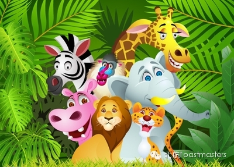
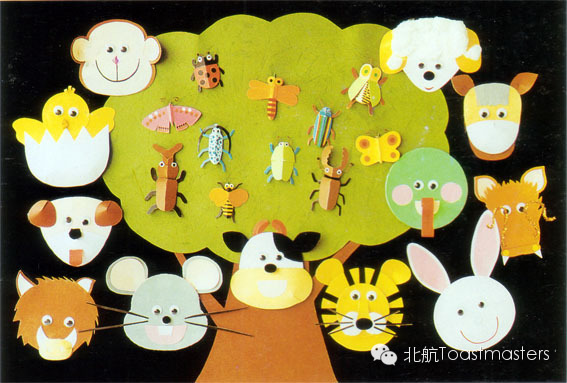
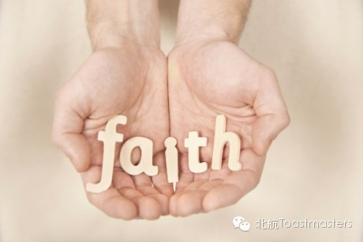
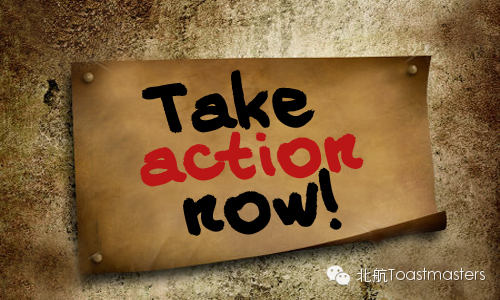

Venue: Room A212, New Main Building, Beihang University

Toastmaster: Veronica
General evaluator: Mr. Runyon
Animals
are best friend od human beings. We share the mother nature with them,
and we live together with them to keep the balance of the ecosystem.
Some of the animals you may love so much while some of them u may be
frightened to hell. To protect them or to hunt them? Just living
peaceful with them or killing some of them for our safety and use? It is
just the two sides of the coins, let's share your insightful opinion
about this. Waiting for you Friday night!
Table Topics

Hey
hey! Still remember the famous show animal world host by
Zhaozhongxiang? We always make fun of it but we have to admit that
animals are our good friends anyways! So you are a cat person or a dog
person? which animal is your favourate among all those cute friends of
ours? You are totally against or sometimes might agree with killing
animals? Just jump on the stage without hesitation our Interesting
questions from talented and handsome Jack are waiting for you!
Prepared Speech

CC2 Monk
Evaluator Peter
Power of faith
We all know how funny Monk could be cause that's his style, but have u
ever seen the serious and thoughtful side of him? Come here this Friday,
he gonna share this hot topic online recently with you, lead you to the
way of feeling the incredible strength of faith and believing. Let's
get on this spiritual journey with him!

CC4 Jason
Evaluator: Deron
Action Speaks Louder Than Words
Jason is a thoughtful and humorous speaker who can always bring us
insprirations. This time he wants to tell us how 'loud' action could be
even though it might be selience. Too much and only talk? Yeah, that's
annoying! This Friday, Same time, same room, new friends, and new
surprise!
=======================
老朋友：点击右上角按钮分享到朋友圈
新朋友：点击标题下方的【北航Toastmasters】关注我们查看历史消息
向还不了解“北航Toastmasters"的朋友们介绍一下：这个组织专注于提升演讲能力和领导能力。每周五19:30在北航新主楼A212举办meeting.
我们欢迎每一个感兴趣的朋友前来做客!